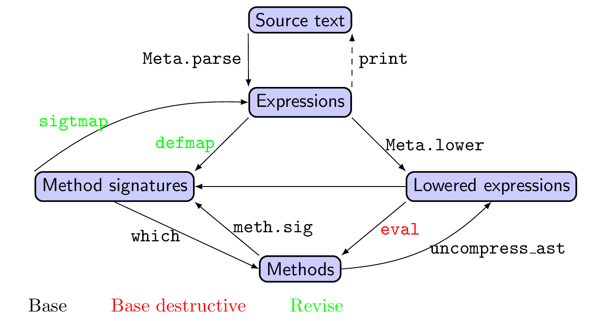

How Revise works
In addition to the material below, see these talks:
Revise is based on the fact that you can change functions even when they are defined in other modules. Here's an example showing how you do that manually (without using Revise):
julia> convert(Float64, π)
3.141592653589793
julia> # That's too hard, let's make life easier for students
julia> @eval Base convert(::Type{Float64}, x::Irrational{:π}) = 3.0
convert (generic function with 714 methods)
julia> convert(Float64, π)
3.0Revise removes some of the tedium of manually copying and pasting code into @eval statements. To decrease the amount of re-JITting required, Revise avoids reloading entire modules; instead, it takes care to eval only the changes in your package(s), much as you would if you were doing it manually. Importantly, changes are detected in a manner that is independent of the specific line numbers in your code, so that you don't have to re-evaluate just because code moves around within the same file. (One unfortunate side effect is that line numbers may become inaccurate in backtraces, but Revise takes pains to correct these, see below.)
To accomplish this, Revise uses the following overall strategy:
- add callbacks to Base so that Revise gets notified when new packages are loaded or new files
included - prepare source-code caches for every new file. These caches will allow Revise to detect changes when files are updated. For precompiled packages this happens on an as-needed basis, using the cached source in the
*.jifile. For non-precompiled packages, Revise parses the source for eachincluded file immediately so that the initial state is known and changes can be detected. - monitor the file system for changes to any of the dependent files; it immediately appends any updates to a list of file names that need future processing
- intercept the REPL's backend to ensure that the list of files-to-be-revised gets processed each time you execute a new command at the REPL
- when a revision is triggered, the source file(s) are re-parsed, and a diff between the cached version and the new version is created.
evalthe diff in the appropriate module(s). - replace the cached version of each source file with the new version, so that further changes are
diffed against the most recent update.
The structure of Revise's internal representation

Figure notes: Nodes represent primary objects in Julia's compilation pipeline. Arrows and their labels represent functions or data structures that allow you to move from one node to another. Red ("destructive") paths force recompilation of dependent functions.
Revise bridges between text files (your source code) and compiled code. Revise consequently maintains data structures that parallel Julia's own internal processing of code. When dealing with a source-code file, you start with strings, parse them to obtain Julia expressions, evaluate them to obtain Julia objects, and (where appropriate, e.g., for methods) compile them to machine code. This will be called the forward workflow. Revise sets up a few key structures that allow it to progress from files to modules to Julia expressions and types.
Revise also sets up a backward workflow, proceeding from compiled code to Julia types back to Julia expressions. This workflow is useful, for example, when dealing with errors: the stack traces displayed by Julia link from the compiled code back to the source files. To make this possible, Julia builds "breadcrumbs" into compiled code that store the filename and line number at which each expression was found. However, these links are static, meaning they are set up once (when the code is compiled) and are not updated when the source file changes. Because trivial manipulations to source files (e.g., the insertion of blank lines and/or comments) can change the line number of an expression without necessitating its recompilation, Revise implements a way of correcting these line numbers before they are displayed to the user. The same problem presents when using a debugger, in that one wants the debugger to display the correct code (at the correct line number) even after modifications have been made to the file. This capability requires that Revise proceed backward from the compiled objects to something resembling the original text file.
Terminology
A few convenience terms are used throughout: definition, signature-expression, and signature-type. These terms are illustrated using the following example:
function print_item(io::IO, item, ntimes::Integer=1, pre::String="")
print(io, pre)
for i = 1:ntimes
print(io, item)
end
endThis represents the definition of a method. Definitions are stored as expressions, using a Revise.RelocatableExpr. The highlighted portion is the signature-expression, specifying the name, argument names and their types, and (if applicable) type-parameters of the method.
From the signature-expression we can generate one or more signature-types. Since this function has two default arguments, this signature-expression generates three signature-types, each corresponding to a different valid way of calling this method:
Tuple{typeof(print_item),IO,Any} # print_item(io, item)
Tuple{typeof(print_item),IO,Any,Integer} # print_item(io, item, 2)
Tuple{typeof(print_item),IO,Any,Integer,String} # print_item(io, item, 2, " ")In Revise's internal code, a definition is often represented with a variable def, and a signature-type with sigt. Recent versions of Revise do not make extensive use of signature expressions.
Computing signatures
Since version 2.0, Revise works primarily with lowered-code representations, specifically using the lowered code to compute method signatures (if you don't know about lowered code, see this tutorial). There are several reasons that make this an attractive approach, of which the most important are:
- keyword-argument methods get "expanded" to multiple methods handling various ways of populating the arguments. The lowered code lists all of them, which ensures that Revise knows about them all. (There are some challenges regarding "gensymmed" names, see LoweredCodeUtils and julia#30908, but in short LoweredCodeUtils "fixes" those difficulties.)
- for methods generated by code, the only really reliable mechanism to compute all the signatures is to step through the code that generates the methods. That is performed using JuliaInterpreter.
As an example, suppose the following code is part of your module definition:
for T in (Float16, Float32, Float64)
@eval sizefloat(x::$T) = sizeof($T)
endThis is equivalent to the following explicit definitions:
sizefloat(x::Float16) = 2
sizefloat(x::Float32) = 4
sizefloat(x::Float64) = 8If you replace the loop with for T in (Float32, Float64), then Revise should delete the method for Float16. But this implies that Revise can deduce all the method-signatures created by this block, which essentially requires "simulating" the block that defines the methods. (In simple cases there are other approaches, but for complex cases stepping through the code seems to be the only viable answer.)
Because lowered code is far simpler than ordinary Julia code, it is much easier to interpret. Let's look briefly at a method definition:
floatwins(x::AbstractFloat, y::Integer) = xwhich has lowered representation approximately equal to
CodeInfo(
│ $(Expr(:method, :floatwins))
│ %2 = Core.Typeof(floatwins)
│ %3 = Core.svec(%2, AbstractFloat, Integer)
│ %4 = Core.svec()
│ %5 = Core.svec(%3, %4)
│ $(Expr(:method, :floatwins, :(%5), CodeInfo(quote
return x
end)))
└── return floatwins
)(I've edited this lightly for clarity.) As one steps through this, the first line tells us we're about to define a method for the function floatwins. Lines 2-5 compute the signature, in the representation svec(sig, params), where here sig = svec(typeof(floatwins), AbstractFloat, Integer) and params = svec(). (This example has no type parameters, which is why params is empty.)
What Revise does is steps through the first 5 of these lines, and when it encounters the Expr(:method, :floatwins, :(%5), CodeInfo(...)) statement, it pulls out the signature (the %5, which refers to the result computed on the 5th line) and records this as a method generated by this block of code. (It does not, however, evaluate the Expr(:method, ...) expression as a whole, because that would force it to be recompiled.) Stepping through this code ensures that Revise can compute the exact signature, no matter how this method is defined at the level of ordinary Julia code.
Unfortunately, modules sometimes contain code blocks that perhaps shouldn't be interpreted:
init_c_library() # library crashes if we call this twiceStarting with version 2.3, Revise attempts to avoid interpreting any code not necessary for signature computation. If you are just tracking changes, Revise will skip over such blocks; if you're loading a file with includet for the first time, Revise will execute such blocks in compiled mode.
Revise achieves this by computing Revise.BackEdges, essentially a set of links encoding the dependencies among different lines of the lowered code. For the floatwins example above, the backedges would represent the fact that line 2 has one direct dependant, line 3 (which uses %2), that lines 3 and 4 both have line 5 as their dependents, and line 5 has line 6 as a dependent. As a consequence, to (nearly) execute line 6, we have to execute lines 2-5, because they set up the signature. If an interdependent block doesn't contain any :method or related (:struct_type, :eval) expressions, then it doesn't need to interpret the block at all.
As should be evident, the lowered code makes it much easier to analyze the graph of these dependencies. There are, however, a few tricky cases. For example, any code inside an @eval might, or might not, expand into lowered code that contains a :method expression. Because Revise can't reliably predict what it will look like after expansion, Revise will execute any code in (or needed for) an @eval block. As a consequence, even after version 2.3 Revise may sometimes interpret more code than is strictly necessary.
If Revise executes code that still shouldn't be run twice, one good solution is to put all initialization inside your module's __init__ function. For files that you track with includet, you can also split "code that defines methods" into a separate file from "code that does work," and have Revise track only the method-defining file. However, starting with version 2.3 Revise should be fairly good at doing this on its own; such manual interventions should not be necessary in most cases.
Core data structures and representations
Two "maps" are central to Revise's inner workings: ExprsSigs maps link definition=>signature-types (the forward workflow), while CodeTracking (specifically, its internal variable method_info) links from signature-type=>definition (the backward workflow). Concretely, CodeTracking.method_info is just an IdDict mapping sigt=>(locationinfo, def). Of note, a stack frame typically contains a link to a method, which stores the equivalent of sigt; consequently, this information allows one to look up the corresponding locationinfo and def. (When methods move, the location information stored by CodeTracking gets updated by Revise.)
Some additional notes about Revise's ExprsSigs maps:
- For expressions that do not define a method, it is just
def=>nothing - For expressions that do define a method, it is
def=>[sigt1, ...].[sigt1, ...]is the list of signature-types generated fromdef(often just one, but more in the case of methods with default arguments or keyword arguments). - They are represented as an
OrderedDictso as to preserve the sequence in which expressions occur in the file. This can be important particularly for updating macro definitions, which affect the expansion of later code. The order is maintained so as to match the current ordering of the source-file, which is not necessarily the same as the ordering when these expressions were lastevaled. - Each key in the map (the definition
RelocatableExpr) is the most recentlyevaled version of the expression. This has an important consequence: the line numbers in thedef(which are still present, even though not used for equality comparisons) correspond to the ones in compiled code. Any discrepancy with the current line numbers in the file is handled through updates to the location information stored byCodeTracking.
ExprsSigs are organized by module and then file, so that one can map filename=>module=>def=>sigts. Importantly, single-file modules can be "reconstructed" from the keys of the corresponding ExprsSigs (and multi-file modules from a collection of such items), since they hold the complete ordered set of expressions that would be evaled to define the module.
The global variable that holds all this information is Revise.pkgdatas, organized into a dictionary of Revise.PkgData objects indexed by Base Julia's PkgId (a unique identifier for packages).
An example
Consider a module, Items, defined by the following two source files:
Items.jl:
__precompile__(false)
module Items
include("indents.jl")
function print_item(io::IO, item, ntimes::Integer=1, pre::String=indent(item))
print(io, pre)
for i = 1:ntimes
print(io, item)
end
end
endindents.jl:
indent(::UInt16) = 2
indent(::UInt8) = 4If you create this as a mini-package and then say using Revise, Items, you can start examining internal variables in the following manner:
julia> id = Base.PkgId(Items)
Items [b24a5932-55ed-11e9-2a88-e52f99e65a0d]
julia> pkgdata = Revise.pkgdatas[id]
PkgData(Items [b24a5932-55ed-11e9-2a88-e52f99e65a0d]:
"src/Items.jl": FileInfo(Main=>ExprsSigs(<1 expressions>, <0 signatures>), Items=>ExprsSigs(<2 expressions>, <3 signatures>), )
"src/indents.jl": FileInfo(Items=>ExprsSigs(<2 expressions>, <2 signatures>), )(Your specific UUID may differ.)
Path information is stored in pkgdata.info:
julia> pkgdata.info
PkgFiles(Items [b24a5932-55ed-11e9-2a88-e52f99e65a0d]):
basedir: "/tmp/pkgs/Items"
files: ["src/Items.jl", "src/indents.jl"]basedir is the only part using absolute paths; everything else is encoded relative to that location. This facilitates, e.g., switching between develop and add mode in the package manager.
src/indents.jl is particularly simple:
julia> pkgdata.fileinfos[2]
FileInfo(Items=>ExprsSigs with the following expressions:
:(indent(::UInt16) = begin
2
end)
:(indent(::UInt8) = begin
4
end), )This is just a summary; to see the actual def=>sigts map, do the following:
julia> pkgdata.fileinfos[2].modexsigs[Items]
OrderedCollections.OrderedDict{Revise.RelocatableExpr,Union{Nothing, Array{Any,1}}} with 2 entries:
:(indent(::UInt16) = begin… => Any[Tuple{typeof(indent),UInt16}]
:(indent(::UInt8) = begin… => Any[Tuple{typeof(indent),UInt8}]These are populated now because we specified __precompile__(false), which forces Revise to defensively parse all expressions in the package in case revisions are made at some future point. For precompiled packages, each pkgdata.fileinfos[i] can instead rely on the cachefile (another field stored in the Revise.FileInfo) as a record of the state of the file at the time the package was loaded; as a consequence, Revise can defer parsing the source file(s) until they are updated.
Items.jl is represented with a bit more complexity, "Items.jl"=>Dict(Main=>map1, Items=>map2). This is because Items.jl contains one expression (the __precompile__ statement) that is evaled in Main, and other expressions that are evaled in Items.
Revisions and computing diffs
When the file system notifies Revise that a file has been modified, Revise re-parses the file and assigns the expressions to the appropriate modules, creating a Revise.ModuleExprsSigs mexsnew. It then compares mexsnew against mexsref, the reference object that is synchronized to code as it was evaled. The following actions are taken:
- if a
defentry inmexsrefis equal to one inmexsnew, the expression is "unchanged" except possibly for line number. ThelocationinfoinCodeTrackingis updated as needed. - if a
defentry inmexsrefis not present inmexsnew, that entry is deleted and any corresponding methods are also deleted. - if a
defentry inmexsnewis not present inmexsref, it isevaled and then added tomexsref.
Technically, a new mexsref is generated every time to ensure that the expressions are ordered as in mexsnew; however, conceptually this is better thought of as an updating of mexsref, after which mexsnew is discarded.
Note that one consequence is that modifying a method causes two actions, the deletion of the original followed by evaling a new version. During revision, all method deletions are performed first, followed by all the new evaled methods. This ensures that if a method gets moved from fileB.jl to fileA.jl, Revise doesn't mistakenly redefine and then delete the method simply because fileA.jl got processed before fileB.jl.
Internal API
You can find more detail about Revise's inner workings in the Developer reference.